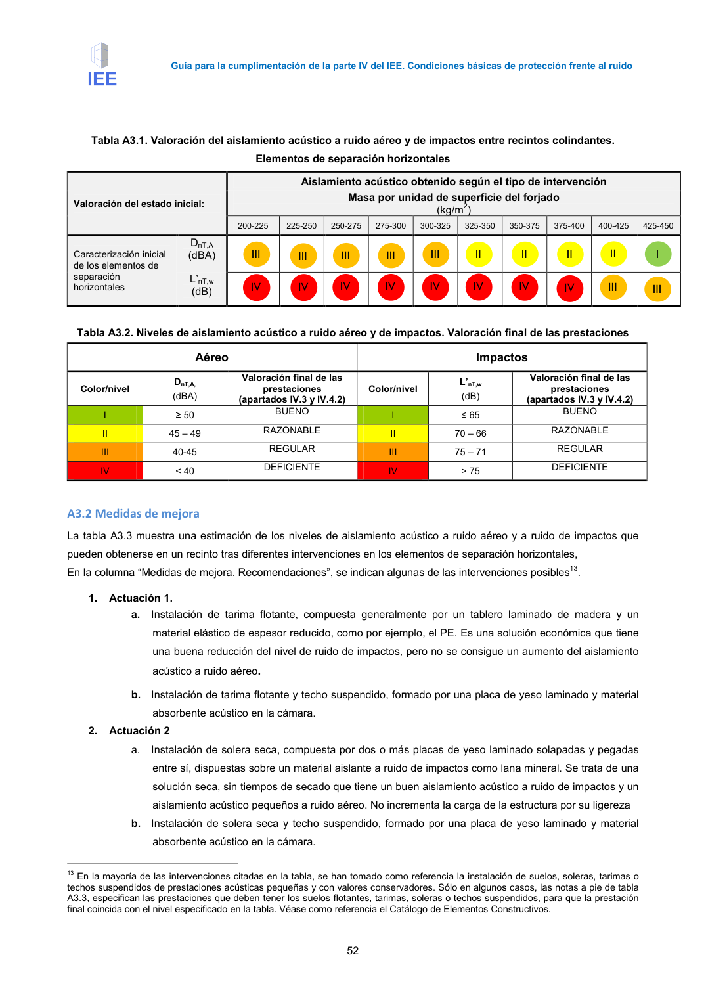

GUIA · A3.2 Medidas de mejora · versión 2016-11-01 · capa guia
Formatos: JSON compacto · Markdown · PDF fuente
Ámbito del documento · texto del ámbito · documento y tablas
Tipo: tablas, figuras · nivel 3 · sección estimada: Anejo 3 Valoración del aislamiento acústico de elementos de separación horizontales y sus · padre: a0043
A3.2 Medidas de mejora La tabla A3.3 muestra una estimación de los niveles de aislamiento acústico a ruido aéreo y a ruido de impactos que pueden obtenerse en un recinto tras diferentes intervenciones en los elementos de separación horizontales, En la columna “Medidas de mejora. Recomendaciones”, se indican algunas de las intervenciones posibles13. 1. Actuación 1. a. Instalación de tarima flotante, compuesta generalmente por un tablero laminado de madera y un material elástico de espesor reducido, como por ejemplo, el PE. Es una solución económica que tiene una buena reducción del nivel de ruido de impactos, pero no se consigue un aumento del aislamiento

PDF fuente redistribuible: copia fiel enlazada en esta página (SHA256 verificado).